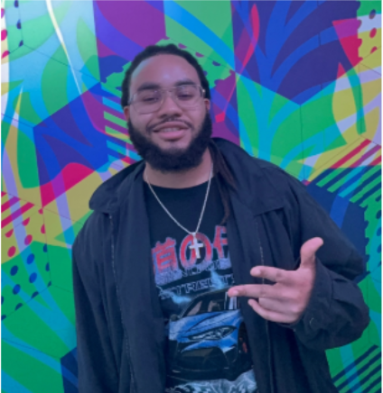
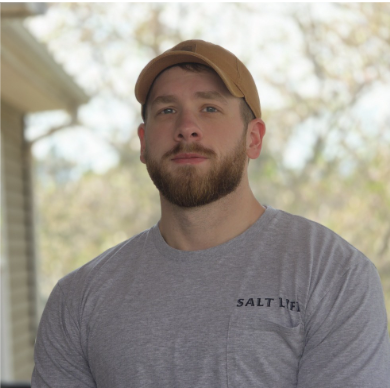
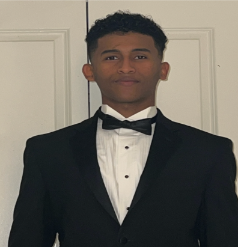

About the Team
Group Blue is a team of senior Computer Science students at Old Dominion University building Faíct, an AI-assisted fact-checking tool.

Johnovon Richards
Interested in data science and game development.

Patrick Cunanan
Interested in web development.
Shaavon Farrow
Interested in cyber and web development.

Colby Scroggins
Computer science student at ODU.

Mohumed Shemson
Interested in cloud computing.